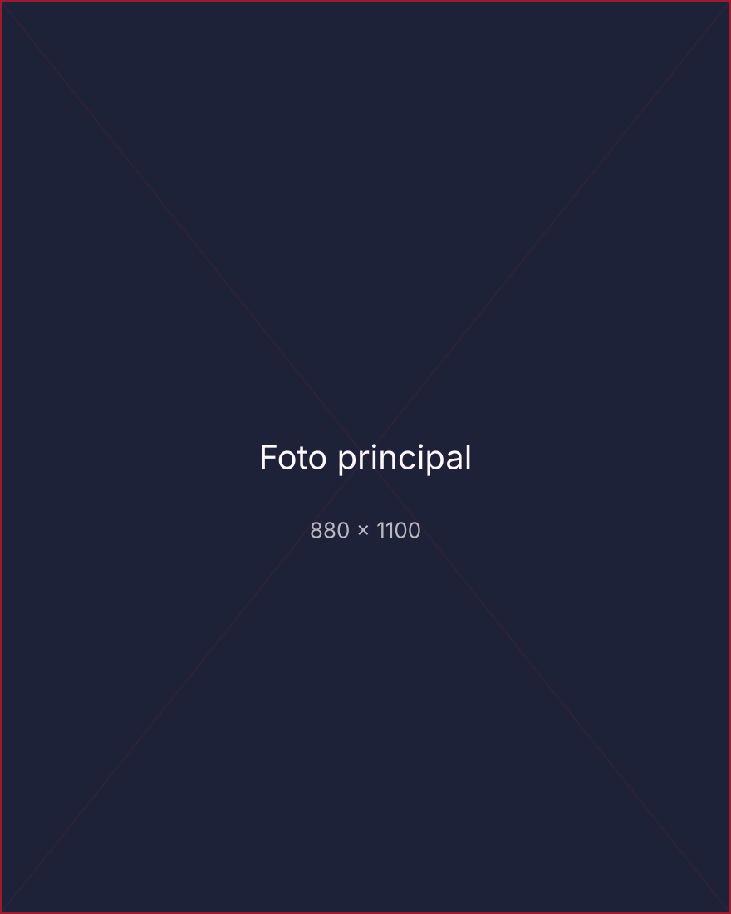

El deporte como política de Estado
Sin continuidad presupuestal ni metas medibles, cada gestión vuelve a empezar de cero. Propongo tres acuerdos mínimos que deberían sobrevivir a cualquier cambio de gobierno.
Padre, empresario y líder en gestión deportiva
Director General de Cienciano, ex Presidente del IPD y del Comité Organizador de los Juegos Panamericanos y Parapanamericanos Lima 2027. Masificación, profesionalización y alto rendimiento para la transformación del deporte en el Perú.

«La masificación, la profesionalización y el alto rendimiento son los pilares fundamentales para lograr la verdadera transformación del deporte en el Perú.»
Ejecutivo de Alta Dirección con más de dos décadas de trayectoria orientada a la rentabilidad, reestructuración y liderazgo estratégico de organizaciones deportivas y empresariales. A lo largo de mi carrera profesional, he consolidado experiencia en la dirección corporativa de proyectos de infraestructura, estructuración financiera, sistemas de seguridad integral y la conducción de entidades deportivas de máxima exigencia.
Como Presidente del Instituto Peruano del Deporte (IPD) (2025-2026), lideré la gestión de activos y presupuesto a escala nacional, además de presidir los comités organizadores de los Juegos Panamericanos y Parapanamericanos Lima 2027 y Bolivarianos Ayacucho-Lima 2025. Asimismo, he ejercido cargos de alta responsabilidad como Presidente de Directorio, Administrador Concursal y Director General, aplicando un enfoque transversal que combina visión de negocio con desarrollo institucional, respaldado por mi formación técnica como Oficial de Armas (Finanzas) de la Fuerza Aérea del Perú.
Actualmente soy Doctorando en Políticas Públicas y Gestión del Estado. Cuento con una sólida base académica que incluye doble Maestría (MBA en Administración de Negocios y MBA en Dirección de Entidades Deportivas), Licenciatura en Administración de Empresas y especializaciones en negociación, resolución de conflictos y gestión deportiva. Mi visión se centra en liderar la transformación y el crecimiento sostenible de instituciones deportivas y empresariales hacia estándares internacionales de excelencia.
Instituto Peruano del Deporte (IPD)
Institución rectora del deporte en el Perú, administrando activos e infraestructura deportiva pública por más de S/ 2,000 millones.
Asociación Deportiva de Fútbol Profesional Club Cienciano del Cusco
Proceso de reestructuración económica, financiera e institucional del equipo profesional, primer y único campeón peruano en torneos internacionales.
Grupo Inmobiliario Comunidad S.A.C.
Grupo constructor e inmobiliario dedicado al desarrollo de proyectos para el sector privado y el Gobierno Peruano.
Asociación Deportiva de Fútbol Profesional de Segunda División (ADFP-SD)
Organismo del fútbol peruano responsable de liderar y gestionar las competencias de la Segunda División profesional.
Grupo Swiss Perú S.A.C.
Dirección general del grupo empresarial dedicado al diseño, desarrollo e implementación de sistemas de seguridad.
Construcciones Comunidad S.A.C.
Gestión ejecutiva y operativa de la empresa constructora.
Fuerza Aérea del Perú (FAP)
Institución militar responsable de todas las actividades aeroespaciales del Perú.
Doctorando en Políticas Públicas y Gestión del Estado
Centro de Altos Estudios Nacionales (CAEN) 2026 – 2029
Master of Business Administration (MBA) – Dirección de Entidades Deportivas
Universidad Europea 2019 – 2022
Maestro en Administración de Negocios
Universidad San Martín de Porres 2005 – 2020
Licenciado en Administración de Empresas
Universidad Nacional Federico Villarreal 1999 – 2004
Escuela de Oficiales de la Fuerza Aérea del Perú - EOFAP
Bachiller, Ciencias de la Administración Aeroespacial 1999 – 2003
Programa de Gestión Estratégica de Poder Aeroespacial y Ciberespacio (PROGEPAC)
Invitado de Honor, Fuerza Aérea del Perú (2026)
Diplomado en Gestión Deportiva
CONMEBOL 2021
Curso de Negociación y Solución de Conflictos (Metodología Harvard)
Cambridge International Consulting (CIC) 2011
Especialización en Presupuesto Público y Gestión por Resultados
Universidad Nacional Mayor de San Marcos (2007)
Inglés (Nivel Intermedio)
Centro de Idiomas de la Pontificia Universidad Católica del Perú (2004)
Columnas, notas de prensa y pronunciamientos sobre la industria del deporte.
Sin continuidad presupuestal ni metas medibles, cada gestión vuelve a empezar de cero. Propongo tres acuerdos mínimos que deberían sobrevivir a cualquier cambio de gobierno.
Balance del plan de legado: sedes con uso posterior definido, operación a cargo de federaciones y gobiernos locales, y un calendario público de mantenimiento.
El apoyo al deportista de élite no puede depender de un ciclo olímpico. Posición institucional frente al debate sobre becas, seguros y centros de entrenamiento.
Para consultas institucionales, gestión directiva o coordinación de prensa, complete el formulario o escriba directamente al correo electrónico.
contacto@sergioludena.com